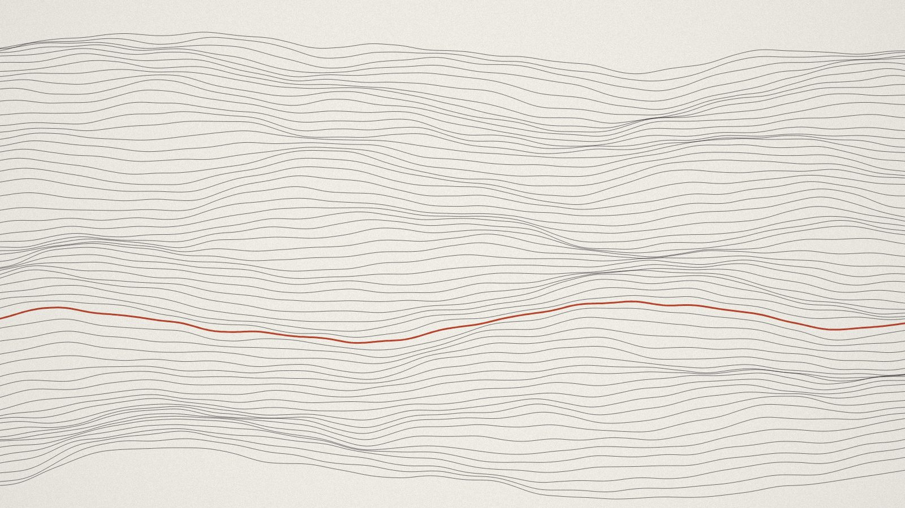
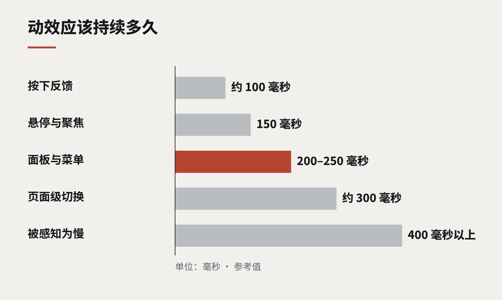

洞察
设计语言
有任务的动效
动画要么在解释什么，要么在碍事。一份简短指南：哪些动效配得上它占用的毫秒，哪些应该删掉。

界面里的动效往往分两波到来。第一波在项目早期，设计师给原型加上过渡，让它显得有生气。第二波在项目后期，有人觉得产品需要更多“惊喜”，于是加上弹跳、视差和动画插画。第一波通常有用，第二波通常没用。
区别在于动效有没有任务。好的界面动画，解释的是用户本来需要自己琢磨的东西：一个元素从哪里来、到哪里去了、刚刚什么变了、什么还在进行。没有任务的动效就是装饰，而会动的装饰，就是会拖慢人的装饰。
值得做的四种任务
- 连续性。 面板从右边滑进来，用户就知道它住在右边，也会回到右边。卡片展开成详情页，用户就知道这些详情属于那张卡片。这是动效最有价值的用途，也是最常被做坏的。
- 反馈。 按下即时响应的按钮、保存后短暂高亮的一行、输入无效时轻轻晃动的输入框。它们确认了一个操作已被接收。
- 引导注意。 在一个静止的屏幕上，只有一个元素在动，就能可靠地吸引视线。节制地使用——一条新通知、一个变化了的合计——它能把用户引向重要的东西。
- 等待。 进度指示和骨架屏告诉用户工作正在进行、大概还剩多少。它们让等待显得更短，更重要的是，让等待显得是有意安排的。

我们坚持的规则
- 快。 大多数界面过渡应该在 150 到 250 毫秒内完成。超过 400 毫秒，用户感受到的是慢，而不是顺滑。
- 可打断。 用户永远不应该等动画播完才能操作。如果他们在过渡中点击，界面应该立刻响应。
- 一致。 像定义颜色一样，把一小组时长和缓动曲线定义为令牌。当每个组件都以同样的节奏运动，产品就显得浑然一体。
- 体贴。 尊重操作系统的“减少动态效果”设置。对一些用户来说，视差和大幅运动会引起真实的不适。为他们提供一个元素直接出现的版本。
- 渲染便宜。 只对 opacity 和 transform 做动画，浏览器可以把它们交给显卡处理。对布局属性做动画，会让页面在普通手机上卡顿。
该删掉什么
删掉每次加载页面都要播放一遍的动效、在用户阅读时循环播放的动效、仅仅因为某个库让它很容易实现而存在的动效。删掉那些把内容藏起来、直到用户滚动到恰好某个位置才出现的滚动触发动画。删掉任何让用户必须先看完、才能开始做事的东西。
一个界面动画能得到的最高赞誉，是没有人提起它。用户只是觉得这个产品很好跟上——却从未注意到，正是动效让它如此。
继续阅读
全部洞察